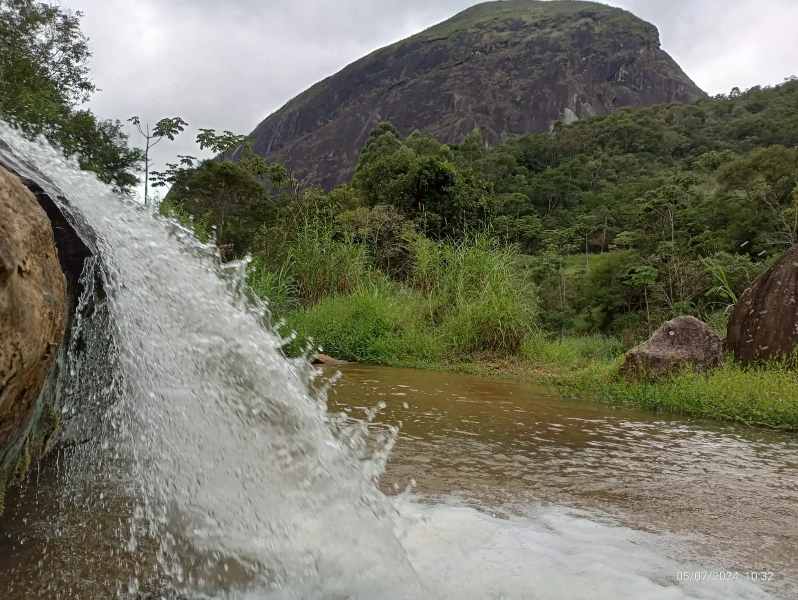
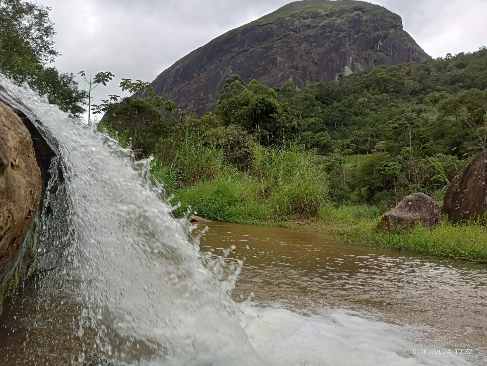

Explore a biodiversidade única e as trilhas deslumbrantes deste parque de 5.335 hectares de Mata Atlântica preservada.
Explore a biodiversidade única e as trilhas deslumbrantes deste parque de 5.335 hectares de Mata Atlântica preservada.
Parque Natural das Montanhas de Teresópolis é uma unidade de conservação municipal que abrange 5.335 hectares de Mata Atlântica, oferecendo um refúgio para a biodiversidade local. Ideal para trilhas, escaladas e observação de fauna e flora, o parque promove o ecoturismo sustentável e a educação ambiental. Localizado em terrenos montanhosos, proporciona vistas panorâmicas e experiências imersivas na natureza.
Descubra as principais trilhas do parque, adequadas para diferentes níveis de dificuldade. Sempre verifique as condições climáticas e horários de funcionamento antes de visitar.
O parque tem uma rica fauna e flora refletindo o caracter remanescente da Mata Atlântica em altitude:


Participe de eventos especiais e visite o parque em horarios convenientes.
Hotário de Funcionamento: terça a domingo, das 8 horas às 17 horas.
Entrada Gratuita.
Veja mais fotos do parque para se inspirar em sua visita.

 
